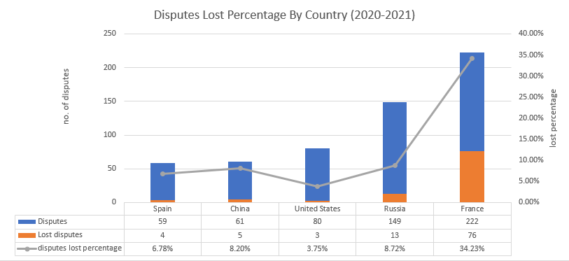
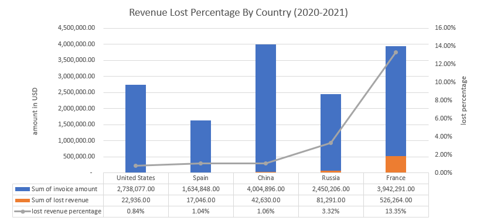

Analyzing Client Disputes at Yellevate
Introduction
Yellevate, which specializes in providing marketing services to other companies, helps mid-sized companies to launch their marketing operations, which includes things like email marketing, website development, content creation, and others.
Yellevate uses data analytics to keep track of how well it helps companies improve their marketing operations. For instance, if a company approaches Yellevate to help improve its online advertising operations, Yellevate tracks this by looking at email impressions, click-through rates, website traffic, and other key performance indicators.
However, for the past few years, Yellevate has been struggling with client disputes. Yellevate defines disputes as clients expressing dissatisfaction with the company’s services and refusing to pay for them. This has been a huge financial burden for the company: statistically, nearly 20% of the disputes raised against Yellevate resulted in a payment opt-out. This has led to an approximate 5% annual loss of revenue (in USD).
Important assumption: The company always provides quality and top-notched services.Analysis Goals
Executives at the company have provided the following information required to identify the circumstances around the dispute problem:
- The processing time in which invoices are settled (average # of days rounded to a whole number).
- The processing time for the company to settle disputes (average # of days rounded to a whole number).
- Percentage of disputes received by the company that were lost (within two decimal places).
- Percentage of revenue lost from disputes (within two decimal places).
- The country where the company reached the highest losses from lost disputes (in USD).
Methodology
Findings

The average processing time for Yellevate to settle invoices is 26 days. Russia has the longest processing time to settle invoices with 29 days. It is followed by the US and France with 28 days, while Spain and China takes 25 and 23 days respectively.

The average days for Yellevate to settle disputes is 36 days. France and China had the shortest processing with only 34 days. This is 12% faster than Spain, Russia, and the US that took 37, 38, and 41 days respectively.

The disputes lost and the processing time to settle disputes do not follow the same trend. Therefore, the processing time for disputes does not affect the number of disputes lost.

France has lost 34.23% of its total disputes which is the highest percentage of lost among other countries (Spain, Russia, US, and China) making up 75% of Yellevate's total disputes lost.

France has lost 13.35% of its total revenue which is the highest percentage of lost among other countries (Spain, Russia, US, and China) making up 76% of Yellevate's total lost revenue.

Disputes lost and lost revenue follow the same trend. As the percentage of disputes lost goes up, the percentage of lost revenue also makes an uptrend particularly those accounts in France. Therefore, to lessen the revenue lost and disputes lost, the company must make sure that clients in France make payments for their invoices.
Recommendations
According to the data that was gathered and analysis that was done, it is apparent that clients from France critically affected Yellevate's cashflow due to disputes. To lessen the frequency of disputes and improve the company's annual revenue, here's what I recommend to do:
- The company should review their contract technicalities and make sure that terms written are understandable and unambiguous for every client. (esp. in France)
- Make a stricter payment shorter payment term - like 15 days to guarantee that money will keep coming into your business.
- Sending payment reminders regularly may also help clients get updated with their invoices and keep them reminded that the deadline is coming up. This way, clients can be persuaded to pay up on time.
- Having a discussion with the client about what payment method they are used to would also make getting paid even easier.
- The company can offer incentives such as discounts or rewards to those who pay before the invoice due date and give late fees to those who don't pay on time.
FAQs
If you have any questions about my data analysis for the Yellevate project, feel free to send me a message through the website and I'll get back to you as soon as possible.